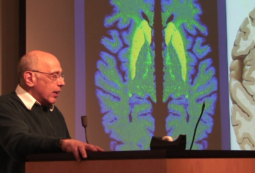

Cost
PSI is offered at no cost to students and all program activities are the result of dedicated volunteer efforts. If you are interested in helping with the program, please email us!
Partnership for Scientific Inquiry

Our Story
PSI introduces high school sophomores and juniors to real-world biomedical research, encouraging hands-on laboratory experience and mentoring by leading scientists. After the retirement of Drs. Edward Neuwelt, James Rosenbaum, and Richard Rosenbaum, Drs. Muldoon and Barajas stepped in to carry forward the PSI High School science program, maintaining its excellence, expanding its reach, and guiding it into its next chapter.
PSI is offered at no cost to students and all program activities are the result of dedicated volunteer efforts. If you are interested in helping with the program, please email us!
Attendance is mandatory. Students must not have unexcused absences and may not participate if other activities such as sports, music, theater, job, etc. create a scheduling conflict.
Students will be assigned homework regarding the lectures, which provide an in-depth examination of inquiry highlighting different scientific, translational, and clinical research approaches. We will learn techniques to read research articles and create proper citations via OHSU library research databases. In addition to the lectures, readings, and videos to watch at home will be assigned. Homework must be turned in on time and each student will receive feedback on their work.
All PSI students are matched one-on-one with a didactic mentor to guide them through the 16-week didactic course.
These mentors are volunteers who are passionate about helping our students. Typically, these mentors are graduate students, medical students, dual-degree students (MD-MPH, MD-PhD, etc.), nursing students, dental students, post-doctoral scholars, and more.
They serve as a great resource to the students for the course as well as for career guidance.
Students will be asked to submit research faculty in a partnering institution (such as OHSU) that they are interested in working with during the summer internship. The PSI team will reach out to these potential mentors and update the student if they need to submit new interests. It will not be possible to pair all students with their first mentor choice but the PSI team is passionate to match as many students into OHSU labs for a rigorous summer internship experience. Despite our efforts, it is possible that we might not have enough mentors for every student, and this is the main reason that we are not able to accept all students who apply to our program.
PSI summer internship mentors expect a high-quality work ethic from students. Students must be in good standing to earn this opportunity (i.e., regular attendance and homework completion). Any act of academic dishonesty or poor academic standing within the program may result in termination from PSI.
Each student will prepare two presentations during the course of our program. One will be a "journal club" presentation of a published scientific article and the second will be a presentation of the research proposal developed by the student.
At the beginning of the course, students are expected to write an essay for the DNA day essay contest. The PSI team provides feedback on this assignment and submits the top 6 essays into the competition. Towards the end of the course, each student will prepare a written document detailing their research proposal. This will be in the format of a grant application commonly used by the scientific community. All written research proposals will be evaluated by the PSI team and sent back to the student with feedback.
It is not necessary to do the summer research to fulfill the program requirements. Due to established policies at our partner research institutions and liability risk management practices regarding minors, students must be at least 16 before commencing summer research. Thus, we request each applicant's date of birth on the application form. Students must complete at least 250 hours during their summer internship without exceeding 40 hours per week. The timeline for summer internships varies depending on the student and mentor, typically it occurs between June to August. Depending on available funding, there are limited financial-need-based scholarships available to our students doing a summer internship.
As of 2023, we host an annual PSI conference at the end of the summer internship series to showcase the students' research through lightning talks and poster presentations. Students who did not participate in the summer internship are expected to present a literature review or other research work they may have done in the past. Family, friends, lab colleagues, mentors, etc are welcome to join the PSI conference.
Students who successfully complete the program requirements may earn 0.5 high school credit. Most schools are willing to comply with this request and it is the responsibility of the student to verify with their school counselor before requesting credit from PSO. Upon request by the student, we will notify schools to request this credit be put on the student's transcripts. Students who successfully participate in optional summer research with their mentor may earn an additional 0.5 high school credit. Every student fulfilling the requirements of the program will also receive a letter of completion signed by the PSI Program Leadership.